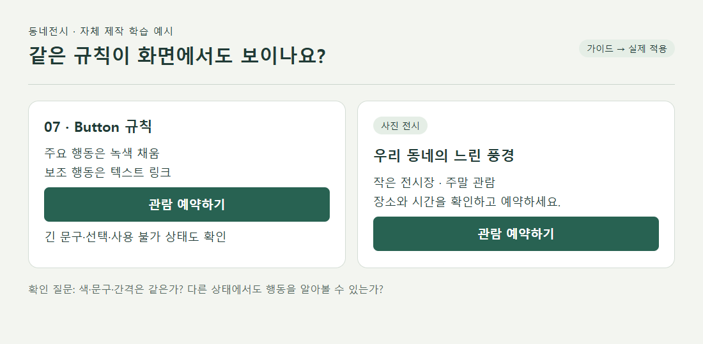

디자인 구성요소 제작 | A그룹
1. 학습 목표와 점검 순서
스타일가이드와 제작 과정이 갖추어졌다면 실제 웹 화면에서 규칙이 유지되는지 살펴봅니다. 평가 피드백에서는 모바일 가로 넘침, 누락 이미지, 표준 파일명과 출처 연결이 반복 보완점으로 확인되었습니다. 자신의 피드백에 해당하는 항목부터 진행하세요.
| 순서 | 할 일 | 남길 결과 |
|---|
| 1 · 10분 | 수정할 구성요소 3개와 유지할 요소 1개 선택 | 같은 번호의 초안·최종 파일 |
| 2 · 20분 | 최종 가이드와 실제 웹의 적용 위치 비교 | 규칙·상태·위치 비교표 |
| 3 · 20분 | 작은 화면과 이미지·버튼 확인 | 조건별 캡처와 결과 |
| 4 · 10분 | 파일 이름·출처·남은 문제 정리 | 인계용 점검 기록 |
수정이 필요 없는 항목은 이유를 설명하며 유지합니다. 모든 요소를 새로 꾸미는 것이 목표는 아닙니다.
준비물: 자신의 스타일가이드 초안·최종 13장, 웹디자인 초안·최종 HTML, 기획 설명과 와이어프레임. 시간은 권장 학습량이며 평가 기준을 추가하는 것은 아닙니다.
디자인 구성요소 제작 | A그룹
2. 한 규칙을 가이드와 화면에서 대조하기

가상 서비스 「동네전시」는 가까운 전시를 고르고 관람 시간을 예약하는 서비스입니다. 아래 비교는 학습용으로 제작한 예시입니다. 자신의 브랜드에 맞는 목적과 규칙으로 바꾸어 적용하세요.
| 대조 항목 | 가이드에서 볼 곳 | 최종 웹에서 볼 곳 |
|---|
| 강조색 | 3번 Colors의 주요 행동 색 | 예약 버튼과 다음 단계 버튼 |
| 상태 | 7번 Button의 기본·포커스·비활성 | 마우스·키보드·예약 불가 화면 |
| 구조 | 13번 Card의 정보 순서·간격 | 전시명→장소→시간→예약 행동 |
실습 1: 같은 규칙이 쓰인 두 위치를 골라 수치·상태·의미를 비교하세요. 다르게 적용한 곳은 오류인지, 목적에 따른 예외인지 판단하고 이유를 적습니다.
디자인 구성요소 제작 | A그룹
3. 작은 화면에서도 의도를 유지하기
최종 HTML을 브라우저에서 열고 개발자 도구의 화면 크기 조절 기능으로 320px·390px·데스크톱 너비를 비교합니다. 현재 피드백에서 문제가 발견된 조건을 다시 확인하는 연습입니다.
| 관찰한 현상 | 먼저 확인할 곳 | 보완 뒤 확인 |
|---|
| 페이지 전체가 좌우로 밀림 | 고정 폭·최소 너비가 큰 영역 | 내용을 숨기지 않고 화면 안에 재배치 |
| 카드 글자가 한 글자씩 줄바꿈 | 열 수·내부 여백·텍스트 공간 | 읽기 편한 줄 길이와 제목 위계 |
| 버튼이 겹치거나 가려짐 | 긴 문구·배치·덮는 요소 | 버튼 문구 전체와 선택 상태 |
| 이미지가 빈칸으로 표시됨 | 파일 포함 여부·상대 경로·대소문자 | 압축을 푼 새 폴더에서도 이미지 표시 |
너비를 바꾸기 전과 후에 같은 카드와 같은 문구를 사용하세요. 수정한 영역을 다시 캡처하고 제목·본문·행동의 우선순위가 유지되는지 설명합니다. 단순히 가로 스크롤을 숨기는 처리는 콘텐츠가 잘렸는지 확인하기 어렵게 합니다.
실습 2: 문제가 가장 큰 화면 하나를 선택해 보완하고, 같은 조건에서 다시 엽니다. 양식에 너비, 파일명, 화면 위치, 바꾼 점과 남은 문제를 적으세요.
디자인 구성요소 제작 | A그룹
4. 변경·유지 결정을 설계 근거로 남기기
“더 깔끔하게 바꿨다” 대신 대상 사용자에게 어떤 불편이 있었고 어떻게 해결하려 했는지 설명합니다. 자료에서 발견한 원리와 자신의 최종 화면을 연결하세요.
| 항목 | 가상 예시의 설명 |
|---|
| 초안 문제 | 전시 제목과 예약 버튼이 비슷하게 강조되어 다음 행동이 불분명했다. |
| 조사에서 볼 점 | 주요 행동과 보조 정보의 위계를 어떻게 구분하는지 비교한다. |
| 최종 변경 | 주요 예약 버튼에만 강조색을 쓰고 보조 링크는 밑줄로 구분했다. |
| 유지 이유 | 본문 서체는 긴 전시 설명을 읽기 편해 유지했다. |
| 확인 방법 | 같은 카드의 긴 제목·예약 불가 상태에서도 정보와 행동이 구분되는지 확인한다. |
위 내용은 작성 방법을 보여주는 가상 설명입니다. 실제 조사한 사례명·직접 URL·관찰 내용·반영한 구성요소 번호를 자신의 문서에 적습니다. 사용자가 실제로 더 빨리 예약했다는 결과는 관찰했을 때만 기록합니다.
실습 3: 변경한 3개 항목과 유지한 1개 항목을 설명하고, 최종 웹의 해당 위치를 직접 짚어 소개하세요.
디자인 구성요소 제작 | A그룹
5. 제출 폴더와 인계 기록 점검
| 대상 | 완료 확인 |
|---|
| 이미지 26장 | 초안1~13과 최종1~13이 같은 번호·역할로 대응하고 모두 열린다. |
| HTML 2개 | 웹디자인_초안.html과 웹디자인_최종.html이 실제 웹 화면으로 열린다. |
| 기획 설명 | 13개 의도, 변경·유지 이유, 조사 출처와 웹 적용 위치가 연결된다. |
| 보조 파일 | HTML에 필요한 이미지·서체 등 실제 사용 파일과 경로를 확인한다. |
| 정리 | 제출본을 별도 폴더로 복사하고 과제와 무관한 캐시·브라우저 자료는 포함하지 않는다. |
스타일가이드를 세로로 모은 HTML과 브랜드 웹사이트 HTML을 구분하세요. 웹사이트는 와이어프레임의 정보 순서와 실제 탐색 흐름을 보여주어야 합니다. 미리보기 이미지 한 장으로 웹 적용 확인을 대신하지 않습니다.
- 양식 1: 가이드 규칙과 웹 적용 위치 비교
- 양식 2: 화면 너비·상태·자산 점검
- 양식 3: 최종 인계와 남은 보완사항
다음 학습: 디지털디자인 사후관리에서 이번에 남긴 문제와 수정 결과를 이어서 확인합니다. 해결한 항목과 아직 남은 항목을 구분해 두세요.
디자인 구성요소 제작 | A그룹
6. 참고자료와 적용 활동
한국어 무료 공개 자료입니다. 안내한 범위를 읽거나 보고 자신의 결과물에 적용하세요.
토스 · 황희영 Platform Designer
제품이 커지면 디자인 시스템 가이드는 어떻게 개선돼야 할까?
학습 범위: 큰 구조부터 자세한 요소로 / 최악의 케이스 그리기 / 접근성 영역 나누기
읽고 할 일: 자신의 카드에서 긴 문구와 여러 상태가 함께 나타나는 경우를 고르고, 가이드와 실제 화면을 대조하세요.
MDN Web Docs
반응형 디자인
학습 범위: 반응형 웹 디자인의 개념 / 미디어 쿼리 / 반응형 레이아웃 기술
읽고 할 일: 현재 HTML의 좁은 화면 문제를 찾아 열 수·너비·텍스트 배치 중 조정할 대상을 선택하세요.